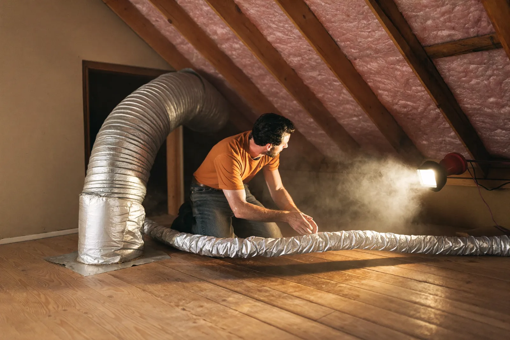

Four services, one crew, one visit. Most San Antonio homes need two of these at the same time — here is how to tell which.

Every supply run, every return, the register boots, the plenum and the blower wheel — cleaned under negative pressure so debris leaves the house instead of moving around it. This is the service most people mean when they call us.
The problem it solves is recirculation. Dust that settles inside a duct does not stay put; it gets lifted again every time the blower starts. In San Antonio that dust is a mix of limestone fines, cedar and oak pollen, and whatever the attic contributes through gaps in the flex duct. Ignore it long enough and you are wiping the same surfaces twice a week and wondering why.
Best for homes over about ten years old, homes that just came out of a remodel, and anyone who has never had it done. See the full air duct cleaning page for the process and what affects the quote. Call us today for air duct cleaning in San Antonio.
We clear the full run from the back of the dryer to the exterior termination, including roof-terminated runs that most homeowners cannot reach, and confirm airflow at the hood before we leave.
The problem it solves is lint. Lint is not just a dust nuisance — it is fuel sitting inside a heated duct. The NFPA attributes roughly 14,700 home fires a year to clothes dryers, and more than a third of those trace back to a vent nobody cleaned. Long before that, you notice it as towels that need two cycles and a laundry room that runs hot.
Anyone running a dryer through a long attic or roof run should have this done yearly. Read the dryer vent cleaning page for warning signs and duct types. Call us today for dryer vent cleaning in San Antonio.
We open the air handler cabinet, clean the evaporator coil face and the condensate drain pan, and clear the drain line while we are in there.
The problem it solves is a coil acting like a filter. Dust that gets past a cheap filter lands on a cold, wet coil and mats into the fins. That blanket blocks airflow, drops cooling capacity, drives up the electric bill in a San Antonio August, and gives mold a damp place to live. A neglected coil is also the single most common reason a system freezes over on the hottest day of the year.
If your system is running longer than it used to or the air from the vents is not as cold, start here. See the AC coil cleaning page. Call us today for AC coil cleaning in San Antonio.
Physical removal of microbial growth from duct surfaces and equipment, followed by an EPA-registered antimicrobial rated for HVAC use — applied after cleaning, never as a substitute for it.
The problem it solves is a smell that keeps coming back. San Antonio humidity sits high enough for most of the year that condensation inside a duct run or on a coil is normal, and dust plus moisture is all mold needs. Spraying a disinfectant over a dirty duct does nothing except mask the odor for a week. Left alone, growth spreads to the coil and the air handler, and then every room in the house gets a dose.
If you smell must the moment the AC starts, this is the service to ask about. Read the duct mold removal page. Call us today for duct mold removal in San Antonio.
Describe what you are noticing — the smell, the dust, the dryer taking two cycles — and we will tell you which of these actually applies. Most homes need one or two, not all four, and we will say so.
Booking two services together costs less than two separate trips. Tell us what is going on in your San Antonio home and we will put together a single number.